というわけで、特殊手荷物券（380円)を購入。
チケット購入時に、「これ折りたたみですかー？」とスタッフの男の子に声をかけられる。
折りたたみだと何か問題があるのかなー…とおもいきや
「僕、折りたたみ欲しいんですよねー」と。
「あーこれ安っすいですよー1万円ぐらいだったかなー」
「えーそうなんっすかー」
意外と折りたたみ自転車人気。
というわけで、特殊手荷物券（380円)を購入。
チケット購入時に、「これ折りたたみですかー？」とスタッフの男の子に声をかけられる。
折りたたみだと何か問題があるのかなー…とおもいきや
「僕、折りたたみ欲しいんですよねー」と。
「あーこれ安っすいですよー1万円ぐらいだったかなー」
「えーそうなんっすかー」
意外と折りたたみ自転車人気。
{kind=link}
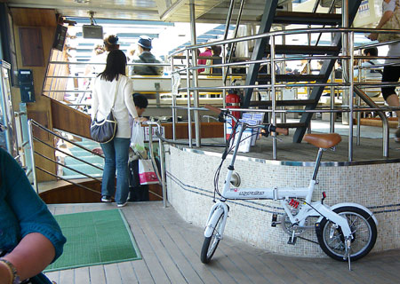
自転車置き場があるのかなーと思ったら、「ここに置いてください」と、ふつーの通路の端っこを指定された。 結構邪魔な気がするんだけど…{kind=link}
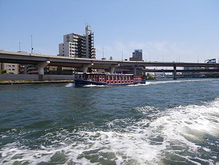
春のぉーうらーらーのー隅田川ぁー。 いつも上から眺めているから、水面近くを眺めるのは新鮮。{kind=link}
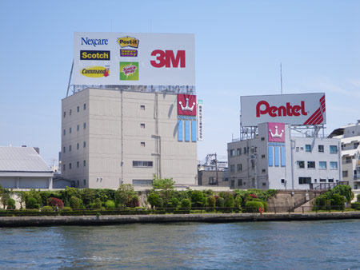
でっかくってわかりやすい看板。{kind=link}
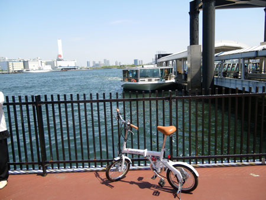
日の出桟橋到着。{kind=link}
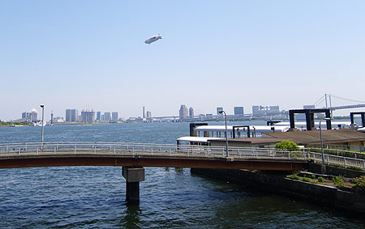
お台場とレインボーブリッジと飛行船。{kind=link}
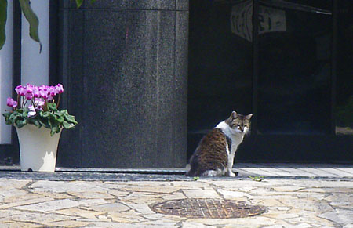
ネコ三郎{kind=link}
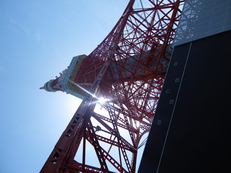
東京タワーの下から。 前回は誕生日に来たから、かれこれ8ヶ月ぶり。 最近ではスカイツリーに押されてるのかな。 …ってゆーか、スカイツリー界隈の下町も、東京タワー界隈のような雰囲気になるのかね。{kind=link}
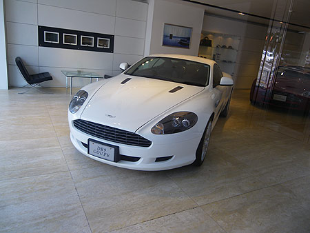
アストンマーティン屋さん マロ顔だね。{kind=link}
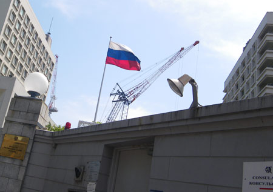
ロシア大使館前通過。 ロシアに入国することはあるのかなぁ…興味のある国だけど、近しいようで遠い国だなぁ。 以前、トランジットで立ち寄ったシェレメチェボ空港の雰囲気を知ってから、ロシアの興味がぐっと高まった気がする。古くさい応接室のような雰囲気とにおい、インド系が多くて人混みの中をすすむとカレーの香りがして、みんな我関せずとロシア人も外国人もどこかみんなそっぽを向いているような奇妙な空港。あれがロシアの入り口だとしたら、街中はどうなのかしらん。{kind=link}
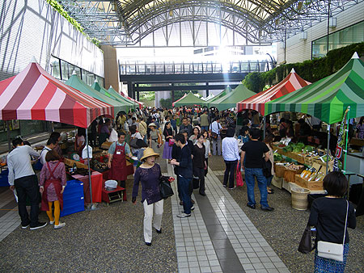
アークヒルズのマルシェ「マルシェジャポン」あれこれと生産者が顔見せしながら販売。{kind=link}
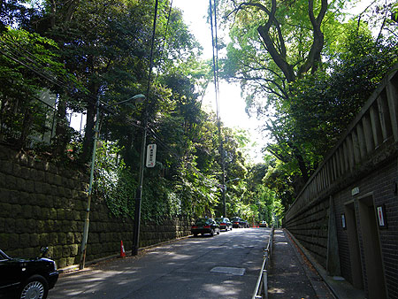
赤坂の裏手は緑でいっぱい。 やたらめったら高級そうなマンションもいっぱい。もし、私がここに住んでいたら…とゆー妄想をちょっとしてみる。{kind=link}
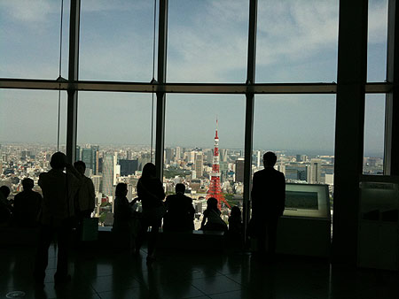
というわけで六本木ヒルズ。 持ってて良かった年間パスポート。高いトコ好きだから（バカだから？って言われるけど…）何度来ても楽しんでる。{kind=link}
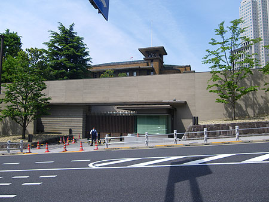
困ったちゃんのおうち。{kind=link}
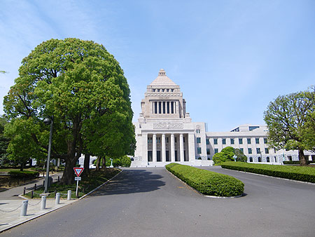
学級崩壊の小学校{kind=link}
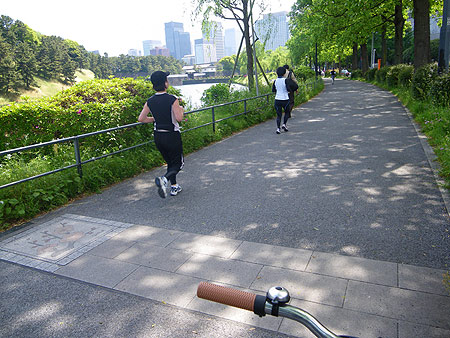
それでもみんな走ってる。